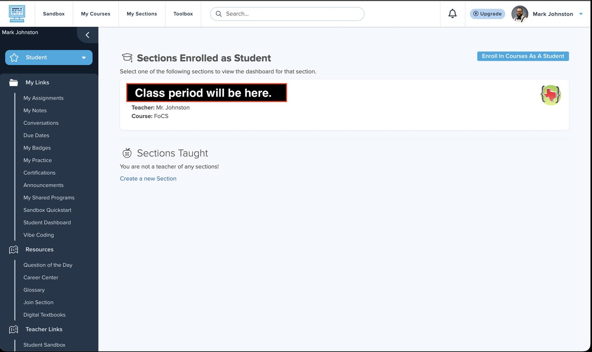
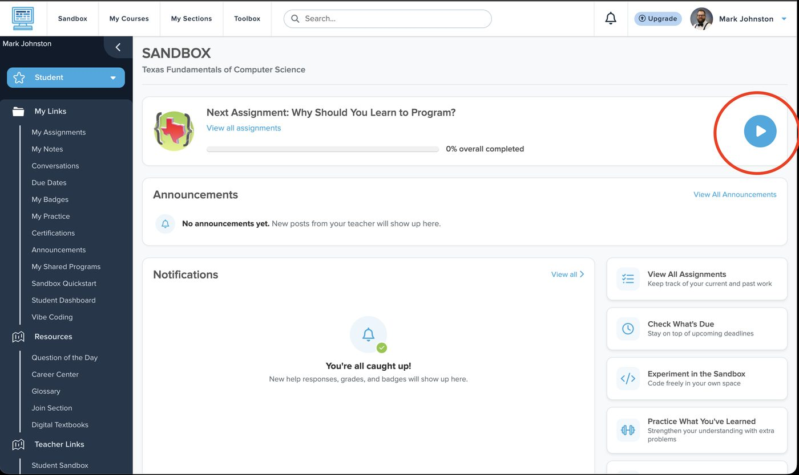
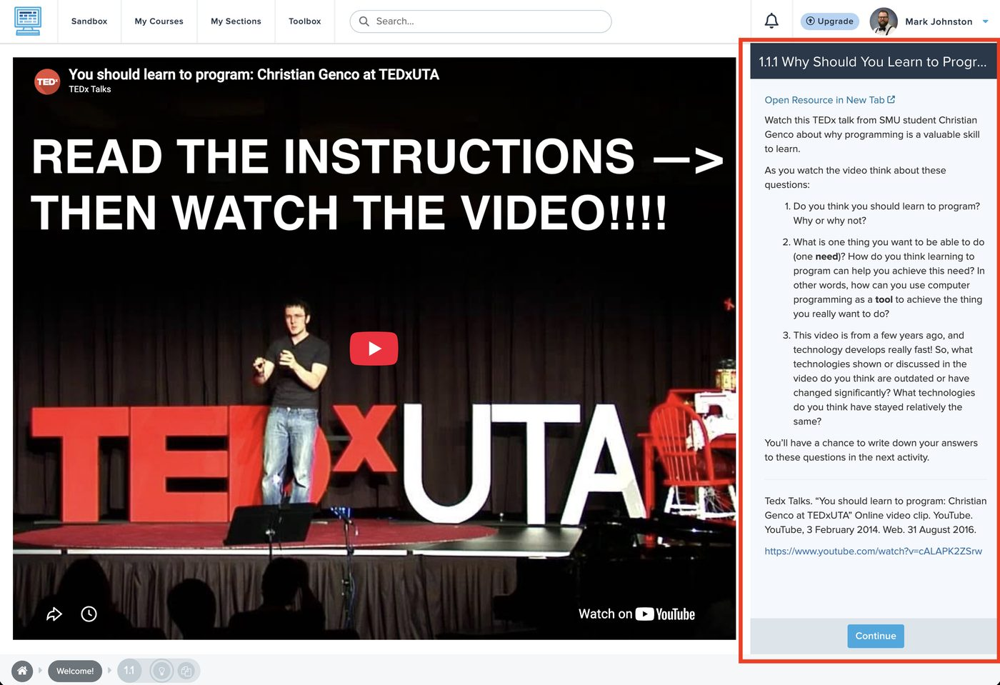
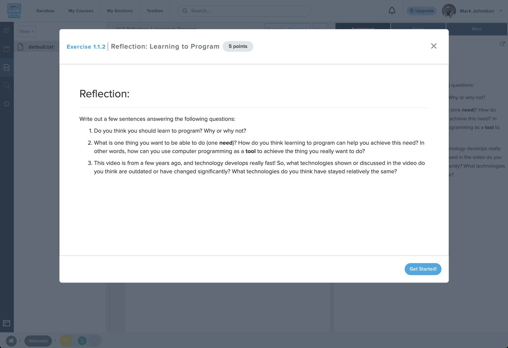
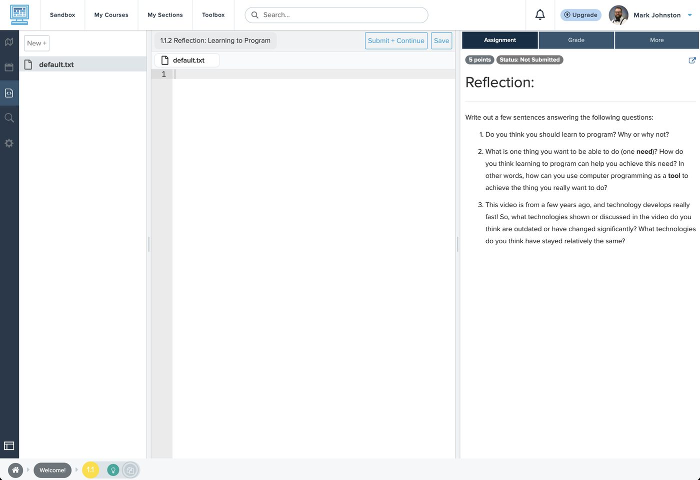
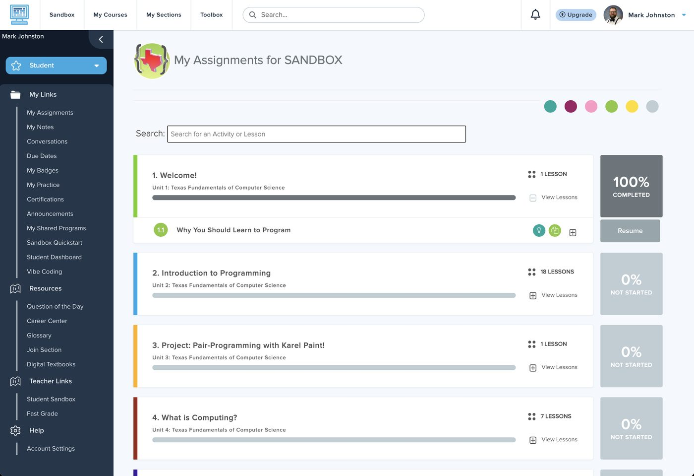

CodeHS is the website where we will write our programs from now on. Today’s job is small on purpose: log in, watch one video, write a few sentences. If it works, you are set up for the rest of the year. If it doesn’t, we find out today... not on a day that counts for more. CodeHS es el sitio donde programaremos de ahora en adelante. Hoy: entrar, ver un video, escribir unas oraciones.
1 · Log in 3 min
- Go to
codehs.com. - Click Log In (top right).
- Choose Log in with Google and pick your school account, the one that ends in
@canutillo-isd.org. Not a personal Gmail.
Entra a codehs.com, haz clic en Log In y elige tu cuenta de la escuela (@canutillo-isd.org).
mjohnston@canutillo-isd.org,
subject CodeHS login, one sentence saying what the screen shows.
Then move on to the next thing in today’s Google Classroom post. Logins get fixed by Mr. Johnston, not by the sub.
¿No puedes entrar? No crees una cuenta nueva. Mándale un correo a mjohnston@canutillo-isd.org (asunto: CodeHS login) y sigue con lo demás.2 · Open your class 1 min
You should see Sections Enrolled as Student with one class listed: your period, Teacher: Mr. Johnston, Course: FoCS. Click it. Haz clic en tu clase.

The black box is where your class period name will be.
Already see “Next Assignment: Why Should You Learn to Program?” Then you are in. Skip to step 3.
No class listed? That is exactly what today is for. Do not click Enroll In Courses As A Student
or Join Section. Email Mr. Johnston at mjohnston@canutillo-isd.org (subject: CodeHS login) and move on.
¿No aparece tu clase? No hagas clic en Enroll ni en Join Section. Mándale un correo a Mr. Johnston y sigue.
3 · Press play 1 min
This is your class page. Under Next Assignment it says Why Should You Learn to Program? Press the big blue play button on the right side of that box. Presiona el botón azul de play.

Where this says SANDBOX, yours will say your class period. Same page.
4 · Read first, THEN watch 10 min
On the right is a box with three questions. Read them first. Then watch the video (headphones, or sound off with captions on). The questions are what you will write about next, so watch with them in mind. Lee las tres preguntas primero. Luego mira el video con audífonos o con subtítulos.

When the video ends, click Continue at the bottom of that right-hand box.
5 · Write your answers 10 min
A box pops up: Exercise 1.1.2 · Reflection: Learning to Program. Read the three questions again, then click Get Started! Lee las preguntas y haz clic en Get Started.

Now you get a blank file called default.txt. Type your answers right there, in the big white area.
Number them 1, 2, 3. A few complete sentences each, in your own words.
Questions 1 and 2 are about you, not a summary of the video. Question 3 is about the video:
name specific things you saw in it. Every answer needs a because.
Escribe tus respuestas en el área blanca, numeradas 1, 2, 3. Las preguntas 1 y 2 son sobre ti. La 3 es sobre el video: nombra cosas que viste. Cada respuesta necesita un “porque”.

Click Save now and then. When all three are answered, click Submit + Continue.
CodeHS will jump you ahead to the start of Unit 2. Stop there. Don’t do it. Go to step 6. CodeHS te llevará a la Unidad 2. Detente ahí. Pasa al paso 6.
6 · Check that it counted 1 min
First get back to your class page: click My Sections in the bar at the top, then click your class. Now the left menu has words in it. Click My Assignments. The first box, 1. Welcome!, should say 100% COMPLETED. Haz clic en My Sections arriba, luego en tu clase, luego en My Assignments. La caja 1. Welcome! debe decir 100% COMPLETED.

Where this says SANDBOX, yours will say your class period.